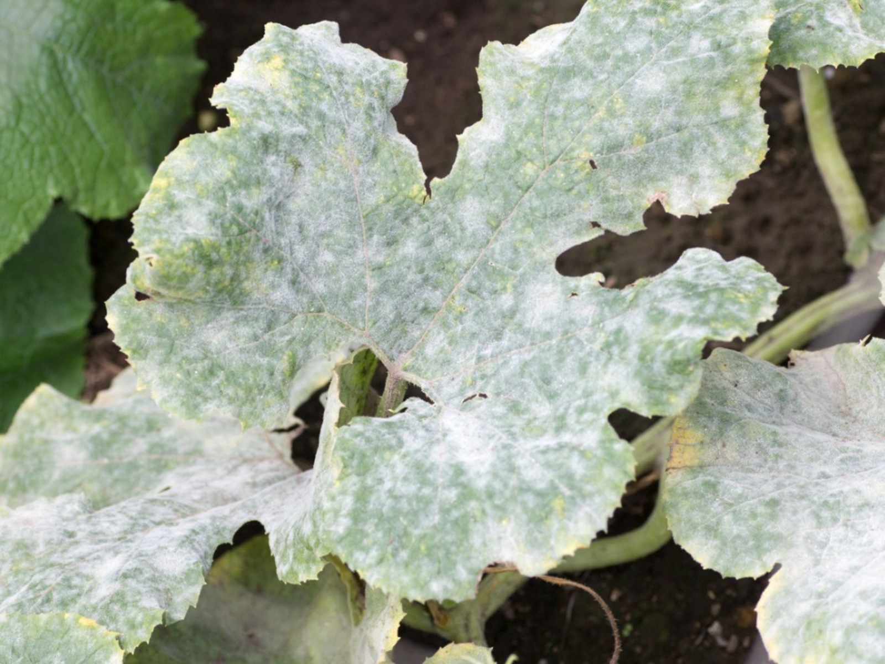
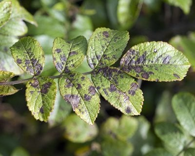
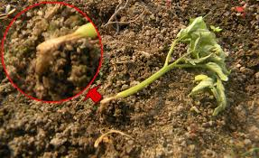
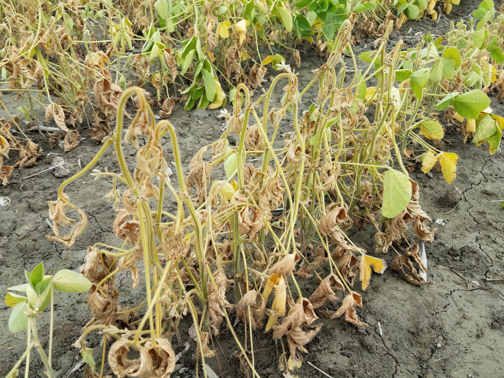
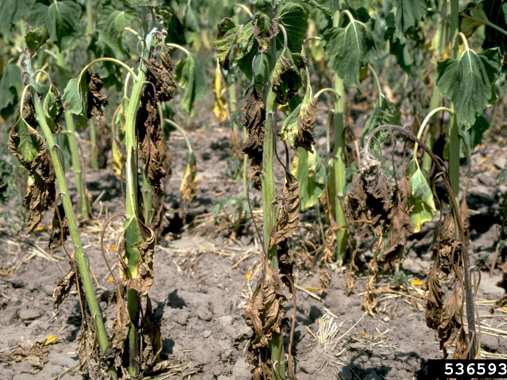
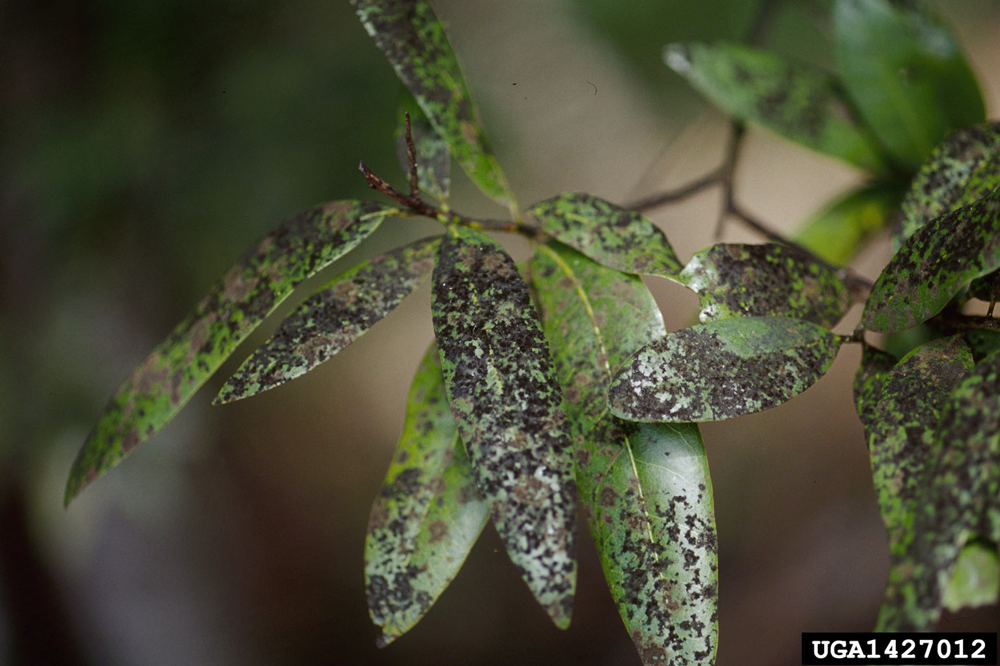
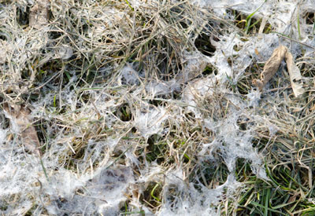
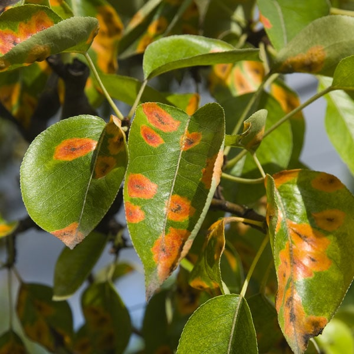

Powdery Mildew

Problem: Powdery mildew leaves a telltale white dusty coating on leaves, stems and flowers. Caused by a fungus, it affects a number of plants, including lilacs, apples, grapes, cucumbers, peas, phlox, daisies and roses.
Solution: Rake up and destroy infected leaves to reduce the spread of spores. Also, give plants good drainage and ample air circulation. Avoid overhead watering at night; mid-morning is preferred to allow foliage to dry before evening. Commercial fungicides are available for powdery mildew, or you can spray with a solution of one tsp. baking soda and one quart of water as recommended by George “Doc” and Katy Abraham, authors of The Green Thumb Garden Handbook.
Lilac, a highly aromatic plant, is a common victim of powdery mildew.
";
}
if (isset($_POST["check2"])) {
echo "
Downy Mildew

Problem: Downy mildew is caused by fungus-like organisms and affects many ornamentals and edibles, such as impatiens, pansies, columbine, grapevines, lettuce and cole crops such as broccoli and cauliflower. Often occurring during wet weather, downy mildew causes the upper portion of leaves to discolor, while the bottoms develop white or gray mold.
Solution: Plant resistant cultivars when available. No fungicides are available, but cultural practices can help. Remove and destroy infected foliage, or entire plants if downy mildew is prevalent. Avoid crowding plants or watering them in the evening, and rotate edibles year to year.
";
}
if (isset($_POST["check3"])) {
echo "
Black Spot

Problem: Black spot is a fungal disease commonly found on roses, but also on other flowers and fruits. While it doesn’t kill plants outright, it weakens them and makes them susceptible to other problems. In cool, moist weather, small black spots appear on foliage, which starts to turn yellow and eventually drops off.
Solution: The fungus overwinters in diseased canes and leaves, so remove both before winter. Keep foliage clean and dry by mulching beneath plants, positioning roses where morning sun will quickly evaporate dew, and watering at the roots rather than wetting the foliage. Consider planting varieties of roses resistant to black spot. Plants also can be sprayed with a fungicide to prevent black spot.
";
}
if (isset($_POST["check4"])) {
echo "
Mosaic Virus

Problem: There are a number of mosaic viruses, but gardeners are most likely to encounter two: tomato mosaic virus and tobacco mosaic virus. The former infects tomatoes, peppers, potatoes, apples, pears and cherries; the latter infects tomatoes, peppers, cucumbers, lettuce, beets, petunias and, of course, tobacco.
Mosaic virus causes mottled yellow and green leaves that are sometimes curled and distorted. Some plants exhibit yellowing, stunted growth, malformed fruits and reduced yield. Mosaic virus is more common in hot weather.
Solution: There are no chemical controls, but resistant varieties exist. The virus can live in dry soil for some time. Remove and destroy infected plants, roots and all, and avoid planting susceptible plants in the same area for two years. Because tobacco is a carrier, smokers should wash hands thoroughly before handling plants.
";
}
if (isset($_POST["check5"])) {
echo "
Damping-Off Disease

Problem: Damping-off disease, caused by several soil-borne fungi, is most problematic in wet, humid conditions. It infects seedlings and causes them to collapse and decay. It’s often found in greenhouses, but can occur outdoors as well.
Solution: There is no treatment, but you can prevent it with good cultural practices. Use new pots, cell packs or trays, or those disinfected with a 10 percent bleach solution. Fill with fresh, bagged, soilless potting mix, avoid crowding seedlings and provide adequate ventilation.
";
}
if (isset($_POST["check6"])) {
echo "
Fusarium Wilt

Problem: Caused by a soil-borne fungus, fusarium wilt affects ornamental and edible plants, including dianthus, beans, tomatoes, peas and asparagus. The disease causes wilted leaves and stunted plants, as well as root rot and sometimes blackened stem rot. It’s especially active in hot summer temperatures.
Solution: There are no chemical controls available to home gardeners, but there are disease-resistant cultivars. If fusarium wilt shows up somewhere in the garden, remove and destroy infected plants and do not plant the same species in that spot for five years.
";
}
if (isset($_POST["check7"])) {
echo "

Problem: Verticillium wilt is a fungal disease that affects hundreds of species of trees, shrubs, edibles and ornamentals (see list of susceptible plants here). Pathogens, which can live in the soil for years, make their way into the plant through the roots, eventually clogging the vascular system and causing branches to wilt suddenly and foliage to turn yellow and fall off prematurely. It can also lead to stunted growth.
Solution: Fungicides are not effective, but good sanitation practices may help. Remove and destroy infected annuals, perennials and edibles. Prune diseased branches off trees and shrubs. (When you do this, you’ll notice a telltale green streak or stain in the wood.) Sterilizing cutting tools with a 10 percent bleach solution between cuts.
";
}
if (isset($_POST["check8"])) {
echo "
Sooty Mold

Problem: Sooty mold refers to fungi that grow on the sticky deposits, called honeydew, left by plant-sucking insects. On leaves it’s not only unsightly; it impedes photosynthesis and stunts plant growth. Leaves coated with sooty mold also drop off prematurely.
Solution: To deal with sooty mold, you have to deal with the plant-sucking insects leaving the honeydew, such as aphids, leafhoppers and mealybugs. Spray them with insecticidal soap or neem oil. Ants are attracted to the honeydew for food, so they protect the plant-sucking insects from predatory insects that would otherwise keep a lid on the pest population. Trap ants or, with woody plants, paint a sticky compound such as Tanglefoot around stems.
";
}
if (isset($_POST["check9"])) {
echo "
Snow Mold

Problem: Snow mold is a fungus that flourishes in the cold, moist conditions found beneath snow. It attacks turf grass. After snow melts, symptoms become visible: light tan areas of matted grass caused by threads of mold.
Solution: Rake the matted grass to break up the mold and allow for new growth. In fall, make the last cutting of the year shorter to discourage tall grass blades from falling over and contributing to matting.
";
}
if (isset($_POST["check10"])) {
echo "
Rust

Problem: Rust, another fungal disease, is easy to spot because it forms rusty spots on leaves and sometimes stems. The spots eventually progress from reddish orange to black. There are many types of rust that can attack plants such as hollyhocks, roses, daylilies and tomatoes.
Solution: Fungicides are available. Culturally, it’s a good practice to gather and destroy any infected plants to prevent the fungus from overwintering.
";
}